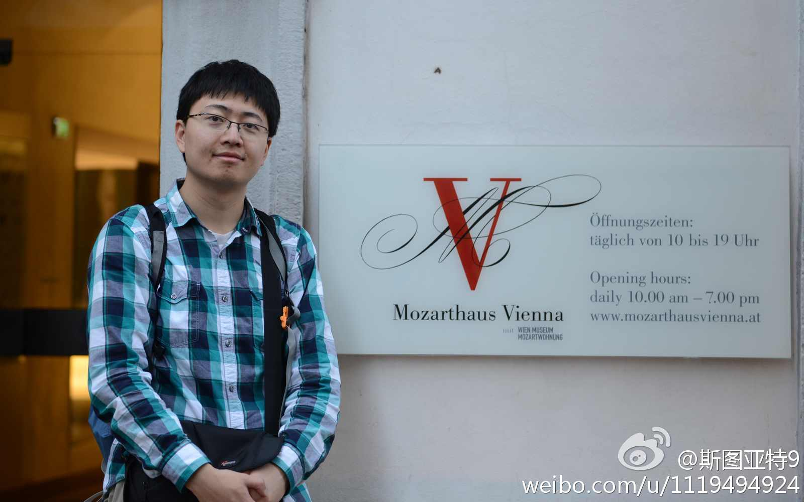
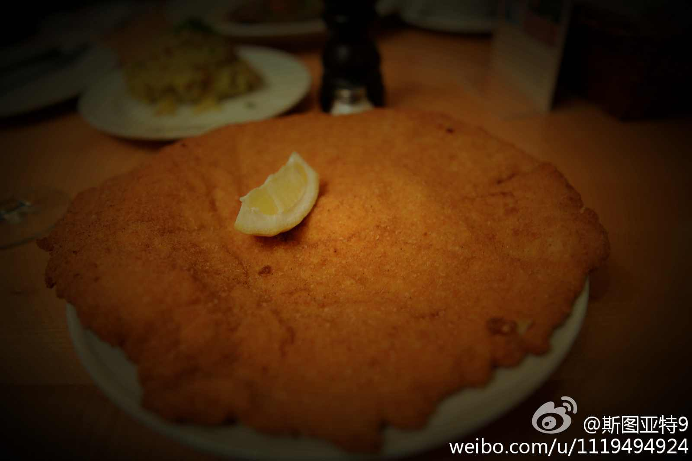
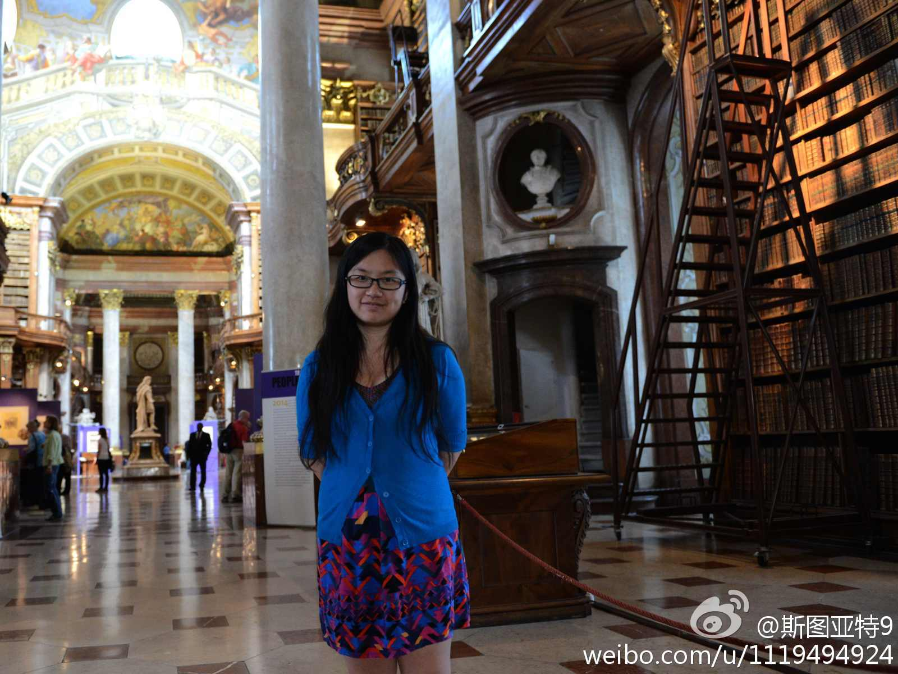
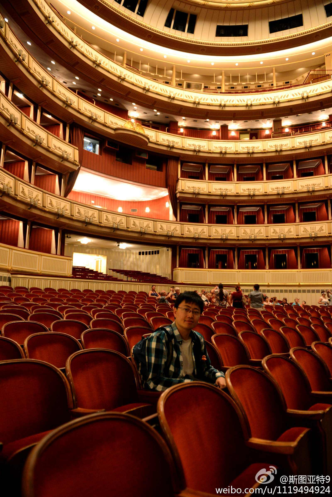
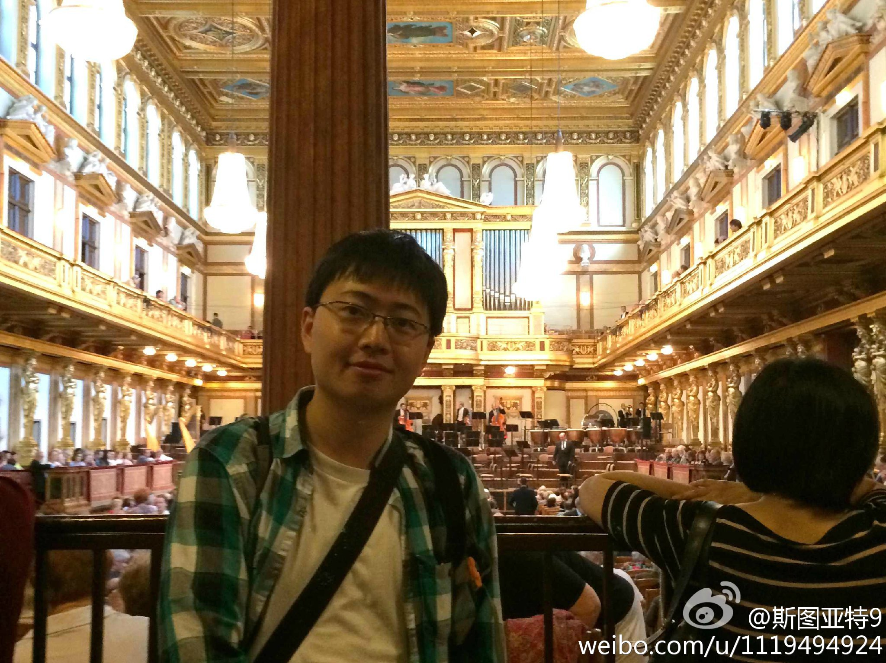

维也纳旅游的照片。实在没照出什么能看的照片，多放几张到此一游照吧。依次是：Karlskirche教堂、莫扎特故居、奥地利名菜Schnitzel、河景、皇宫（Hofburg ）、国家图书馆、国家歌剧院、金色大厅。 
我觉得更重要的有几点：1. 社区的归属感——教会里家的感觉； 2. 仪式——神圣感；3. 美学——教堂里营造的气氛、圣歌对心灵的打动等；4. 反复——三人成虎以及数学归纳法。 你可以和党的教育比对一下就容易理解了。@_杨肉_:我觉得吧，传教啊洗脑啊本质上是智力的对抗。灌输想法的要么比被灌输的聪明，要么是有聪明人教他该怎么做才能被相信。当年俺们学校每天晚上都有人在黑灯瞎火的地方企图拦住单独走的学生问“同学，你听说过圣经吗”，不吓到别人已经不错了，显然不是很聪明的方法。。。